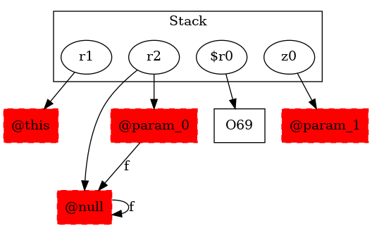

-1 : r1 := @this: Test2
-1 : r2 := @parameter0: testcase.Test2
-1 : z0 := @parameter1: boolean
64 : if z0 == 0 goto (branch)
65 : r2 = r2.|testcase.Test2: testcase.Test2 f|
65 : goto [?= (branch)]
68 : if z0 == 0 goto return r2
69 : $r0 = new testcase.Test2 ->class soot.jimple.internal.JAssignStmt {Left: class soot.jimple.internal.JimpleLocal, Right: class soot.jimple.internal.JNewExpr}
69 : specialinvoke $r0.|testcase.Test2: void |init|()|()
69 : return $r0
71 : return r2
